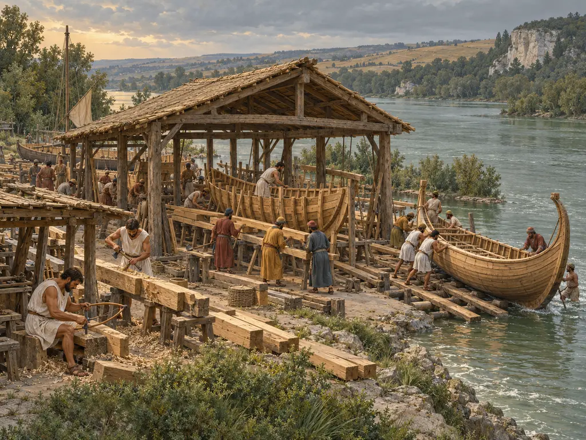
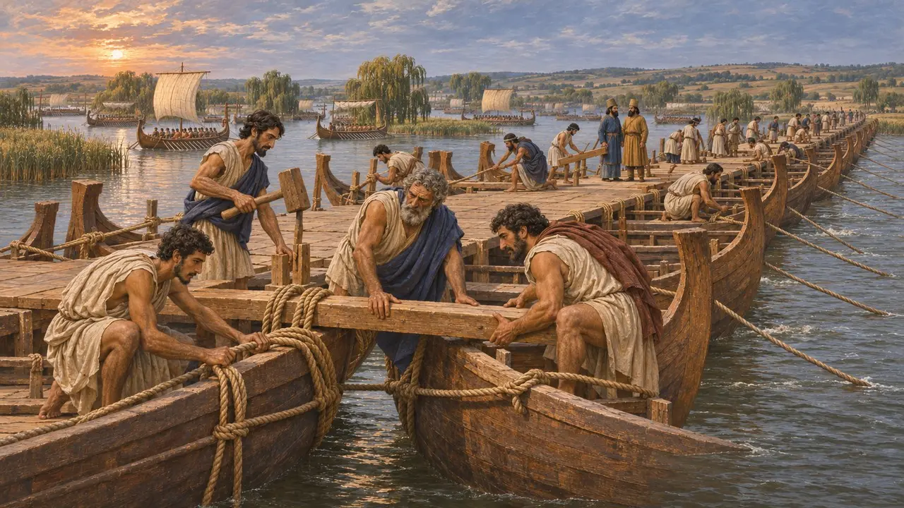
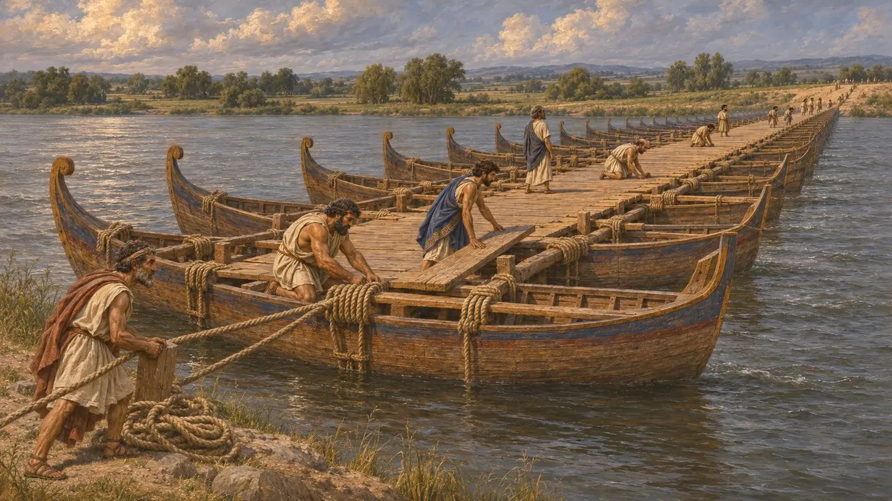
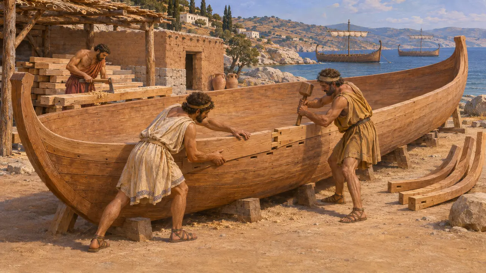
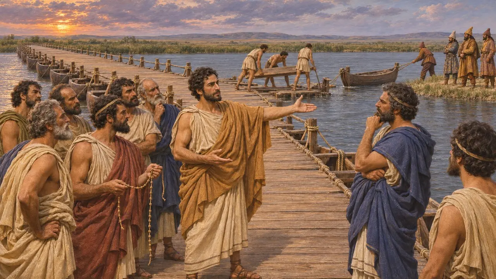
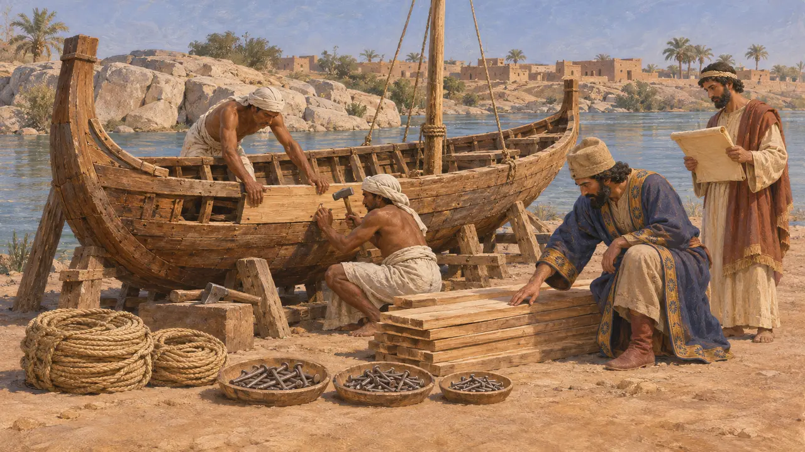

Ionische Schiffbauer
Griechische Schiffsmannschaften und Zimmerleute, die für Dareios den Istros überbrückten, um 513 v. Chr.
Im Spiel: Level 6: Die Schiffbrücke
Für seinen Feldzug gegen die Skythen befahl Dareios den griechischen Städten Ioniens und des Hellesponts, mit ihrer Flotte den Istros (die Donau) hinaufzusegeln und ihn zu überbrücken. Ihre Schiffbauer und Mannschaften errichteten den Übergang und bewachten ihn, und bei Herodot hängt die sichere Rückkehr des Königs von ihrer Treue ab. Die Episode zeigt, wie die persischen Könige für große Werke auf die Fertigkeiten unterworfener Völker zurückgriffen.
Im Spiel: Das Spiel zeigt Schiffbauer, die auf einer Helling am Fluss aus dem Bauholz der Holzfäller neue Boote aufbauen. Herodot berichtet, die Ionier seien mit ihrer eigenen Flotte flussaufwärts gesegelt, und Historiker nehmen an, dass diese Schiffe wahrscheinlich die Brücke bildeten; dies ist also eine Vereinfachung.

Die zum Istros entsandte Flotte
Antiker BerichtHerodot berichtet, Dareios habe den Ioniern, Äolern und Griechen vom Hellespont befohlen, durch das Schwarze Meer zum Istros zu segeln. Sie fuhren zwei Tagesfahrten stromaufwärts und überbrückten den Fluss dort, wo sich seine Mündungsarme teilen. Er nennt für den Feldzug eine Flotte von 600 Schiffen, eine Zahl, die viele Historiker für zu hoch halten.
Herodotus 4.87, 4.89

Eine Brücke aus Schiffen
UmstrittenHerodot beschreibt nirgends, wie die Brücke über den Istros gebaut wurde. Er berichtet, Dareios habe den Ioniern später befohlen, sie abzubrechen und ihm mit ihren Mannschaften auf dem Landweg zu folgen. Deshalb nehmen die meisten Historiker an, dass die Brücke aus einer Reihe aneinandergebundener Schiffe der eigenen Flotte bestand, wie später die Hellespontbrücken des Xerxes. Ob zusätzlich an Ort und Stelle neue Boote gebaut wurden, ist unbekannt.
Herodotus 4.97, 7.36; P. Briant, From Cyrus to Alexander, 2002

Wie ionische Schiffe gebaut wurden
Zeitgenössisch belegtAusgegrabene Wracks aus dem Mittelmeer zeigen, dass Rümpfe dieser Zeit in Schalenbauweise entstanden. Die Schiffbauer verbanden die Planken Kante an Kante, mit Schlitz-und-Zapfen-Verbindungen oder, bei einigen älteren griechischen Rümpfen, durch Vernähen, und setzten die Spanten erst danach ein. Die Arbeit erforderte abgelagertes Holz, geschickte Zimmerleute und Zeit, weshalb wahrscheinlich eine bestehende Flotte genutzt wurde.
J. R. Steffy, Wooden Ship Building and the Interpretation of Shipwrecks, 1994

Die Wacht am Übergang
Antiker BerichtHerodot berichtet, Dareios habe den Ioniern einen Riemen mit sechzig Knoten gegeben und ihnen befohlen, jeden Tag einen zu lösen und heimzusegeln, falls er nicht zurück sei, wenn alle gelöst seien. Als die Skythen sie drängten, die Brücke abzubrechen, stimmte laut Herodot Miltiades von Athen zu, doch Histiaios von Milet überredete die Tyrannen, sie zu erhalten, und nur das skythische Ende wurde abgebaut.
Herodotus 4.98, 4.136-139

Persische Buchführung über Boote
Zeitgenössisch belegtEin späterer aramäischer Brief aus Elephantine, datiert auf das Jahr 412 v. Chr., hält fest, wie der Satrap Arsames die Ausbesserung eines Bootes anordnet, und führt Planken, Nägel und andere Materialien nach Anzahl auf. Er stammt aus der Zeit lange nach Dareios, zeigt aber, wie genau persische Beamte über die für Schiffe verwendeten Materialien Buch führten.
TAD A6.2 (B. Porten and A. Yardeni, Textbook of Aramaic Documents from Ancient Egypt)
Quellen
- Herodotus 4.87-89, 4.97-98, 4.136-142, 7.36
- P. Briant, From Cyrus to Alexander, 2002
- H. T. Wallinga, Ships and Sea-Power before the Great Persian War, 1993
- J. R. Steffy, Wooden Ship Building and the Interpretation of Shipwrecks, 1994
- L. Casson, Ships and Seamanship in the Ancient World, 1971
- B. Porten and A. Yardeni, Textbook of Aramaic Documents from Ancient Egypt, vol. 1, 1986